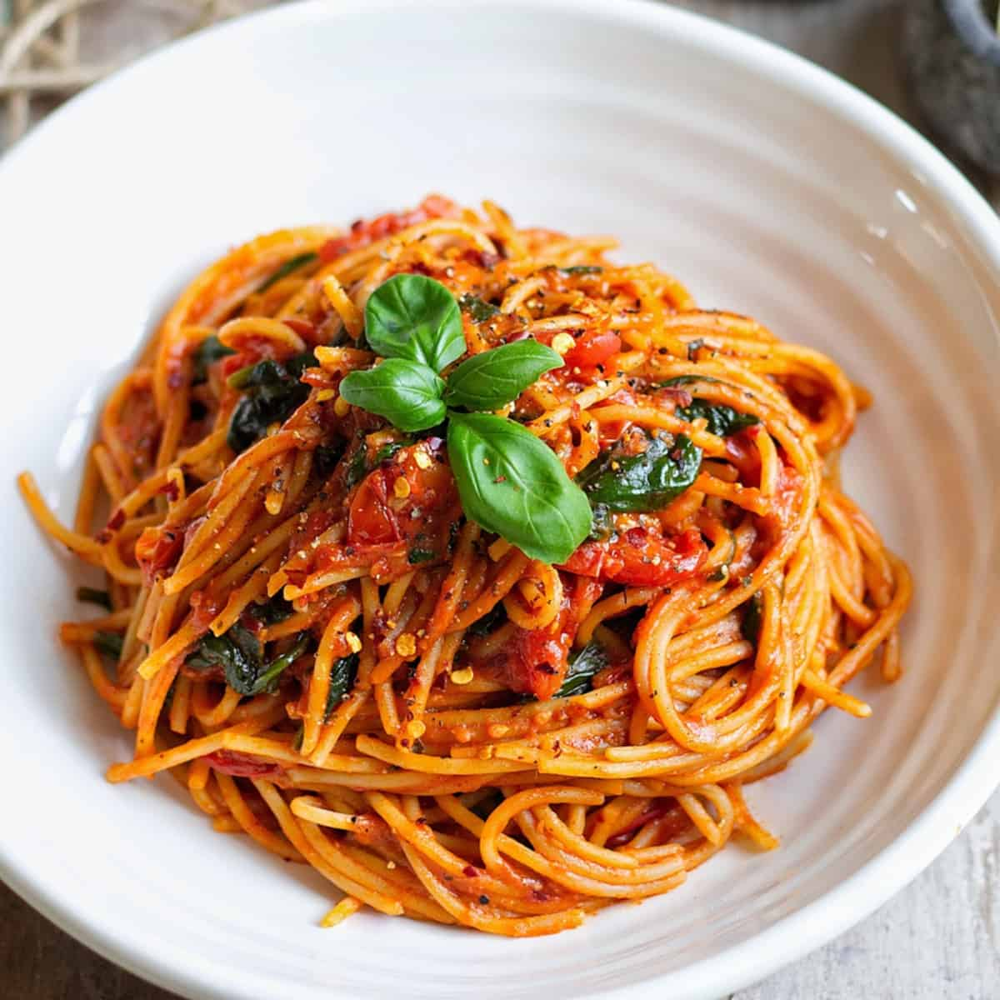

This is truly one of my absolute favourite pasta sauce recipes as this homemade tomato sauce is made in the time the pasta boils! It’s super quick and simple to make and has a comforting kick to it. You honestly can’t beat a homemade pasta sauce made from scratch, especially when it’s tomato sauce from fresh tomatoes! Trust me, after this recipe, you will never want to buy a jarred pasta sauce again!
This Burst Cherry Tomato Sauce is the perfect dish for an autumn or winter evening. It’s great for the whole family to enjoy. If you’ve been wondering how to make tomato sauce from fresh tomatoes, here’s your sign that it’s time to learn!